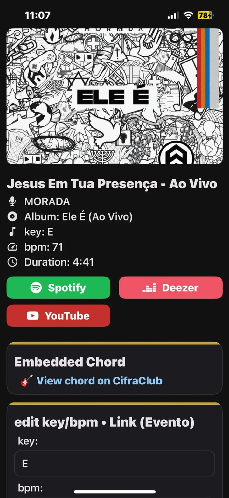
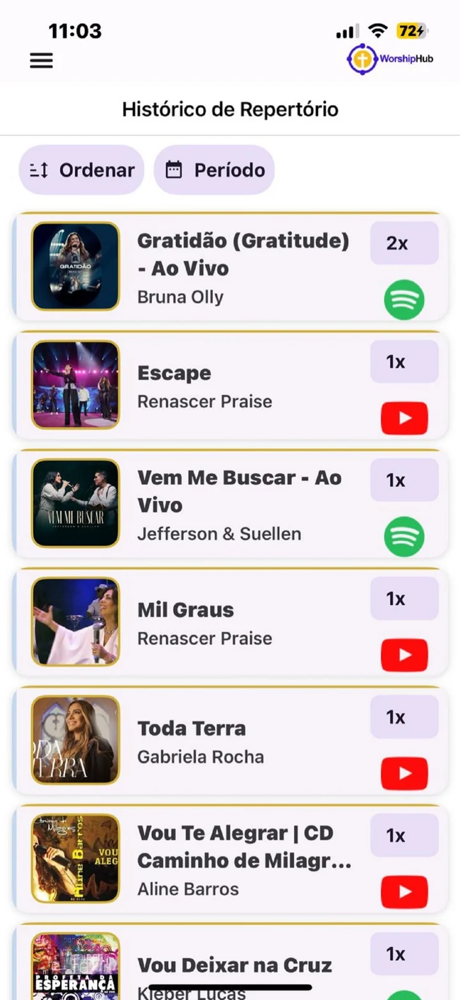

PLATAFORMA PROFISSIONAL · LOUVOR
A plataforma premium para gestão profissional de ministérios de louvor.
Escalas organizadas, repertório centralizado, comunicação por evento, estatísticas de equipe e estrutura pronta para crescer do básico ao multi-igrejas.
- ✓ Menos ruído do que WhatsApp e planilhas soltas
- ✓ Gestão profissional da equipe com visão operacional
- ✓ Estrutura preparada para crescimento e multi-igrejas
1 só lugar
eventos, equipe, repertório e comunicação
+ clareza
para quem precisa liderar com segurança
+ controle
sobre participação, escala e recorrência


Chat por evento
Histórico com Spotify · Deezer · YouTube
Gestão profissional da equipe
Escalas sem retrabalho
Repertório com histórico
Indisponibilidade integrada
Exportação em PDF
Estatísticas de equipe
Base pronta para multi-igrejas
ANTES VS. DEPOIS
O WorshipHub existe para tirar o ministério do improviso e colocar a liderança em um fluxo mais claro.
Menos mensagens perdidas, menos retrabalho na escala, mais visão sobre o que foi tocado, quem está disponível e como a equipe realmente funciona.
Ferramentas espalhadas geram ruído.
Escalas em um lugar, comunicação em outro, repertório sem histórico e pouca visibilidade da equipe. O resultado é desgaste operacional.
- Escalas desorganizadas
- WhatsApp sem contexto
- Repertório sem histórico claro
Uma operação mais centralizada e profissional.
Eventos, equipe, repertório, histórico, chat e indicadores reunidos no mesmo ambiente, com uma experiência mais coerente para liderança e integrantes.
- Fluxo padronizado
- Comunicação por evento
- Mais clareza para decidir
PRODUTO REAL, NÃO APENAS PROMESSA
Uma narrativa mais curta, visual e direta — com telas reais do aplicativo.
Esta seção substitui longas explicações por prova visual. É assim que landing pages SaaS premium reduzem atrito e elevam a confiança mais rápido.
Painel inicial
Próximos eventos, pessoas escaladas e visão rápida da rotina.
A primeira impressão do produto precisa ser forte: organização visível, cards claros e contexto imediato para quem lidera.
Indisponibilidade
Escalas com menos conflito
Os próprios integrantes informam quando não podem servir, reduzindo retrabalho.

Histórico musical
Mais inteligência para o repertório
Consulte o que já foi tocado e encontre músicas com mais contexto e recorrência.

Integrações reais
Spotify, Deezer, YouTube e cifra
Flexibilidade real para músicos e equipes, sem depender de links soltos e memória dispersa.
Estatísticas
Visão qualitativa e quantitativa da equipe
Descubra participação, assiduidade, distribuição por função e tendência operacional.
Exportação
PDF profissional por período
Gere relatórios e materiais operacionais com muito mais agilidade para a liderança.

BENEFÍCIOS CENTRAIS
Uma experiência construída para quem precisa liderar com mais clareza, unidade e controle.
A página vende o produto de forma global, mas os argumentos principais foram organizados para convencer rápido: centralização, gestão profissional e potencial de crescimento.
✦
Gerenciamento completo em um só lugar
Evite depender de várias ferramentas paralelas. O WorshipHub centraliza eventos, equipe, repertório e comunicação em um único fluxo.
▣
Gestão qualitativa e quantitativa da equipe
Visualize participação, assiduidade, indisponibilidades e distribuição por função para tomar decisões com mais precisão.
⟡
Estrutura preparada para multi-igrejas
Da igreja local à coordenação centralizada de múltiplas organizações, o produto já aponta para uma gestão mais profissional.
↗
Menos retrabalho, mais excelência operacional
Com informações centralizadas e contexto por evento, a liderança ganha tempo e melhora a experiência do ministério como um todo.
DIFERENCIAL COMPETITIVO
O verdadeiro carro-chefe: gestão profissional do ministério, com espaço para crescer além do básico.
A maioria das soluções resolve partes do problema. O WorshipHub se posiciona como uma camada profissional de gestão para a liderança que quer visão, controle e operação mais refinada.
◎
Mais do que escala e repertório
O valor percebido cresce quando a liderança entende que a plataforma não substitui só grupos e planilhas — ela melhora o processo de gestão como um todo.
⚙
Processo operacional padronizado
Criação, repetição, comunicação, ajuste de equipe e consulta de histórico acontecem com mais consistência e menos improviso.
◔
Visão clara para a liderança
Quem decide enxerga com mais nitidez gargalos de disponibilidade, participação e equilíbrio de equipe.
⌘
Preparado para estruturas maiores
Se hoje a operação é modesta, ótimo. Se amanhã surgir um cenário multi-igrejas, a lógica do produto já sustenta uma evolução mais profissional.
RECURSOS QUE IMPRESSIONAM
Recursos que transformam um app de organização em uma plataforma de gestão profissional.
Selecionamos apenas os recursos com maior apelo de percepção de valor para o visitante frio. Menos volume, mais impacto.
⟳
Duplicação de eventos
Repita a estrutura certa do evento sem recriar tudo do zero.
☰
Chat privativo por evento
Somente quem está escalado interage naquele contexto.
◉
Paleta para eventos especiais
Mais percepção premium e identidade visual em um clique.
⌁
Indisponibilidade sem retrabalho
Os próprios integrantes informam quando não podem participar.
▥
Filtros avançados de equipe
Veja quem serve mais, quem participa melhor e como o time se distribui.
♫
Histórico com Deezer, Spotify e YouTube
Flexibilidade real para gestão das músicas da igreja.
PLANOS COM PERCEPÇÃO DE VALOR
Planos pensados para diferentes níveis de estrutura, com apresentação visual clara e conversão objetiva.
Primeiro o visitante percebe o custo por dia, depois enxerga o valor real. A contratação comercial pode acontecer por WhatsApp enquanto você evolui o checkout externo.
A partir de menos de R$ 1 por dia para manter o ministério mais alinhado, organizado e profissional.
TEXTO_MOCKADO_CHECKOUT_EXTERNO: substitua este texto quando o checkout externo direto estiver disponível na landing. Até lá, mantenha a contratação comercial pelo WhatsApp e a compra final dentro do app.
PROVA SOCIAL E CONFIANÇA
Quando a liderança sente menos risco, a decisão acontece mais rápido.
Insira aqui depoimentos reais de perfis diferentes para criar confiança sem excesso de distração: coordenação, direção musical e responsável pelas escalas.
“TEXTO_MOCKADO_DEPOIMENTO_COORDENADOR: substitua por um depoimento real do coordenador do ministério.”
NOME_MOCKADO_01 Coordenador · IGREJA_MOCKADA_01“TEXTO_MOCKADO_DEPOIMENTO_DIRETOR_MUSICAL: substitua por um depoimento real do diretor musical.”
NOME_MOCKADO_02 Diretor musical · IGREJA_MOCKADA_02“TEXTO_MOCKADO_DEPOIMENTO_ESCALAS: substitua por um depoimento real do responsável pelas escalas.”
NOME_MOCKADO_03 Responsável pelas escalas · IGREJA_MOCKADA_03PERGUNTAS ESSENCIAIS
Respostas rápidas para reduzir objeções sem tirar o visitante do fluxo de decisão.
O WorshipHub é só para escala e repertório?
Não. A proposta é ser uma plataforma profissional de gestão do ministério, reunindo equipe, eventos, comunicação, repertório, histórico e visão operacional em um único ambiente.
Posso começar pelo plano gratuito?
Sim. O plano gratuito funciona como porta de entrada para experimentar o fluxo central do produto antes de evoluir para camadas mais completas.
Consigo contratar um plano pelo WhatsApp?
Sim. O fluxo comercial pode começar pelo WhatsApp para tirar dúvidas e orientar a contratação. Substitua este texto quando seu checkout externo direto estiver ativo.
O produto atende ministérios pequenos e estruturas maiores?
Sim. A lógica da plataforma foi pensada para funcionar bem desde equipes mais simples até operações mais estruturadas, inclusive com visão de multi-igrejas.
ÚLTIMA CHAMADA PARA DECISÃO
Chegou a hora de organizar seu ministério com uma estrutura realmente profissional.
Se sua liderança já sente o peso da desorganização, da comunicação confusa e da falta de visão operacional, o WorshipHub foi pensado exatamente para esse próximo nível.
1 plataformapara centralizar equipe, repertório, eventos e comunicação.
+ clarezapara quem lidera e precisa decidir com mais segurança.
+ organizaçãona rotina de cada evento, sem depender de fluxos soltos.
+ escalapara crescer do básico ao profissional sem trocar de solução.